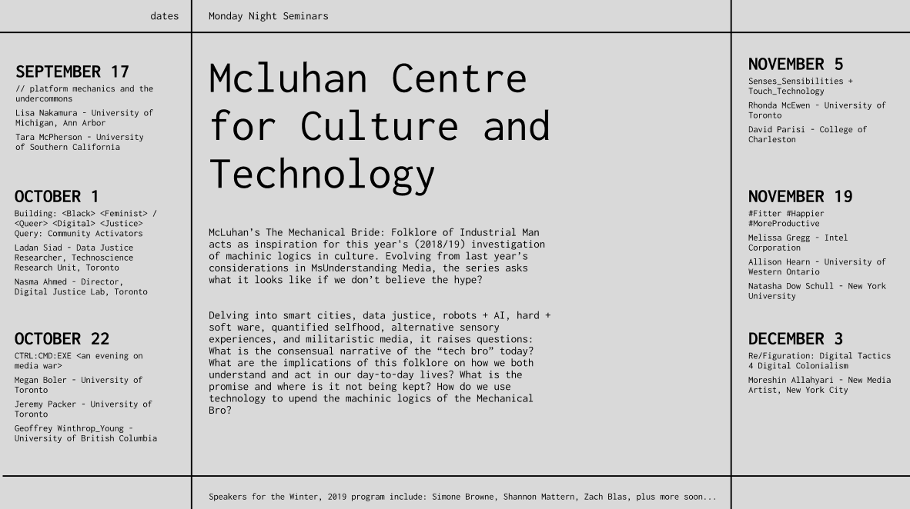
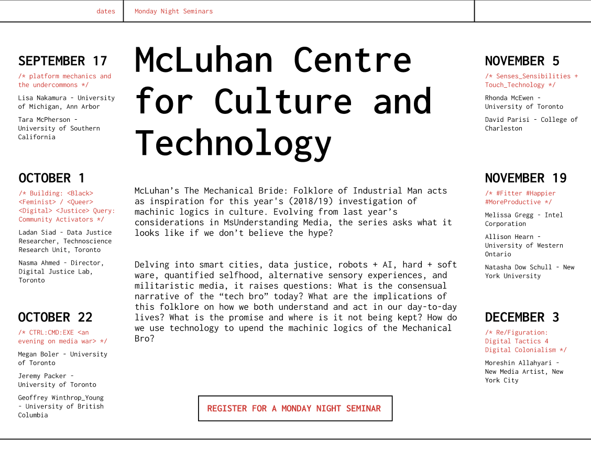
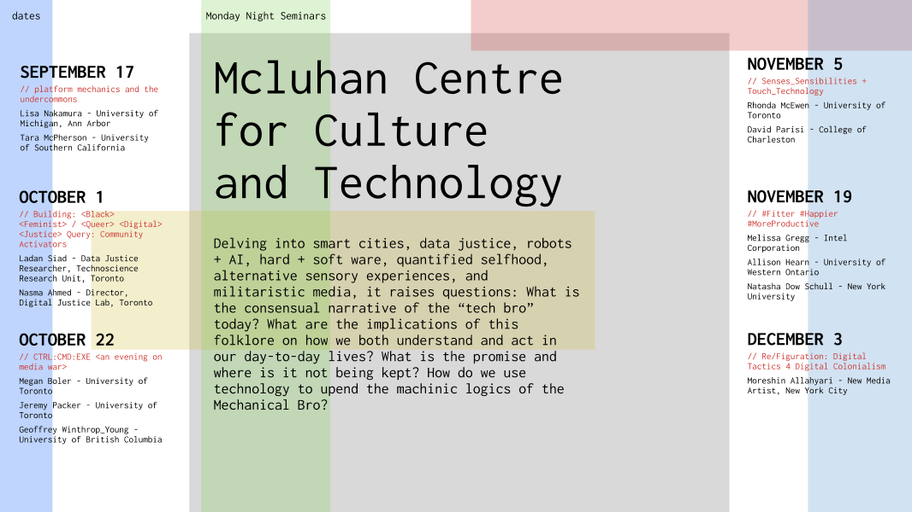
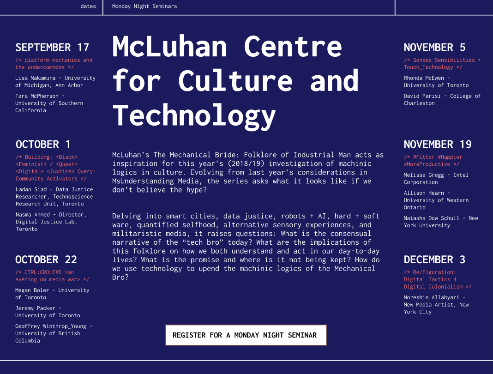

poster process
for this poster project, i chose "Monday Night Seminars at Mcluhan Centre for Culture and Technology".
i designed my poster around the style of computer coding and tech, overall making it cohesive to the offical
website for this event.
wireframe structure: 
i decided to stay with the white background and red/black text to match the official website.
the design is very neat and technical. 
i wanted to make the opening page to be more playful and interactive. i uploaded an image of a computer to this
ascii art converter and got the html code for the
ascii art.
i was having trouble figuring out how to make the ascii art animate while as a background for the poster.
to work around this, i kept the ascii art as my background and made the text interactive instead.
to create some contrast in the text, i increased the font size, changed the font weight,style or the font
variant to make the text more interesting but it still allows the viewer to read the text in both ways.
other poster iterations:
